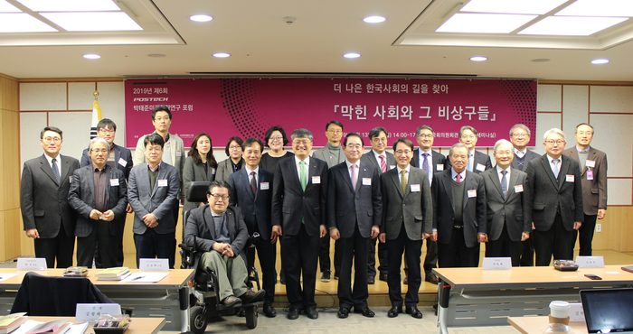

등록일 2019-02-14
포스텍 박태준미래전략연구소
국회미래연구원 공동포럼 개최
더 나은 한국사회의 길을 찾아
막힌 사회와 그 비상구들
포스텍 박태준미래전략연구소
소장
김승환
와 국회미래연구원
원장
박진
13
일 오후
시부터 국회의원회관 제
세미나실에서
더 나은 한국사회의 길을 찾아
막힌 사회와 그 비상구들
이란 주제로 공동포럼을 개최하였다
이번 공동포럼에서는 국가와 사회가 당면한 여러 갈등 문제에 대한 연구 결과를 공유하고 대응 전략을 모색함으로써 더 나은 한국 사회 발전에 기여하기 위하여 준비되었다
박명재
자유한국당
),
이원욱
더불어민주당
국회의원의 축사를 시작으로 연세대학교 한준 교수 외
명의 갈등 관련 연구자들이 계층 양극화
정규직
비정규직 차별
세대 갈등
젠더 갈등
이념 갈등 등에 대한 연구 결과를 발표하고 국회미래연구원 연구진이 토론하였다
앞으로도 국회미래연구원과 포스텍 박태준미래전략연구소는 공동 행사 및 공동 연구를 모색하여 한국 사회의 미래를 위한 활발한 공론에 기여하기로 하였다

